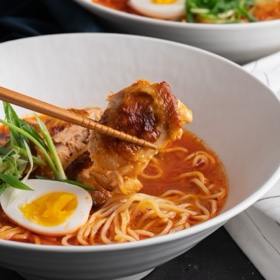

← All recipes
Spicy Korean Chicken Ramen

Servings: 6 · Prep: 15 minutes · Cook: 1 hour 30 minutes
Ingredients
- 1 tbsp vegetable oil
- 1 onion, diced
- 4 garlic cloves, finely chopped
- 4cm (1.6 inches) piece ginger, sliced
- 1kg (about 2 lb) chicken drumsticks and bone-in thigh pieces
- 6 cups chicken stock
- 2 cups (about 300g/10.6oz) drained and lightly squeezed cabbage kimchi*, roughly chopped
- 1 tbsp kimchi juice
- 2 tbsp gochujang*
- 2 tbsp soy sauce
- 2 tsp sesame oil
- cooked ramen noodles to serve
- hard-boiled eggs, halved
- finely sliced spring onion (scallions), to serve
Directions
- Heat the vegetable oil in a large heavy-based saucepan over high heat. Cook the onion, garlic and ginger for about 5 minutes or until the onion has softened.
- Add the chicken stock, kimchi, kimchi juice, gochujang, soy sauce, and chicken. Bring to the boil then reduce heat to low and cover with a lid. Simmer for 1 hour or until the chicken is fork tender.
- Preheat oven grill on high.
- Transfer the chicken pieces to a baking tray lined with foil. Place the chicken under the grill for 10 minutes or until golden. Slice the chicken.
- Remove the ginger from the broth. Taste and season with extra soy sauce if necessary. Divide noodles among serving bowls. Top with chicken and ladle over the soup. Top with an egg and spring onion and serve.
Notes
Kimchi is a spicy and sour fermented Korean side dish often made from cabbage. Find it in the fridge section of Asian grocery stores.
Gochujang is a Korean chilli paste available from Asian grocery stores. If unavailable simply leave it out of the recipe and add a teaspoon of sweet paprika for added colour and chilli flakes for additional spice.
Original source: marionskitchen.com